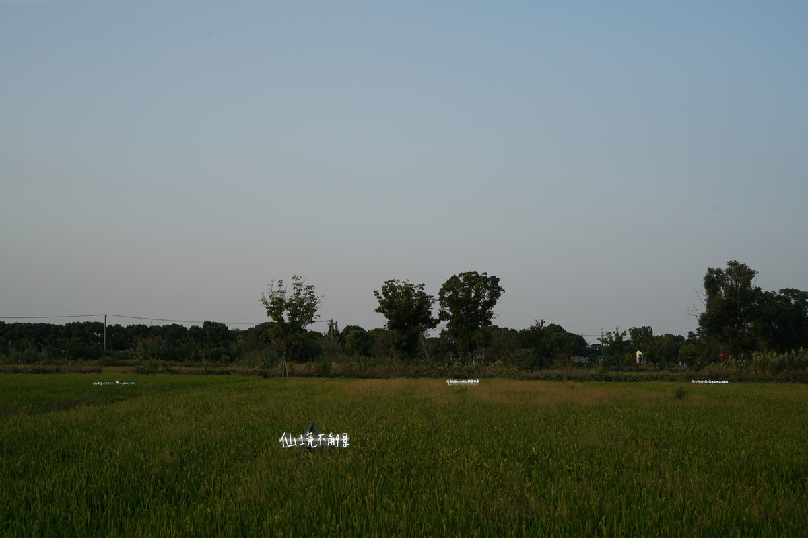

荒原

霓虹灯、角铁、变压器、木条，150x240cmx7，2023
艺术家通过与村民交流，获知他们的名字以及带来的生活上的影响，然后通过人工智能的算法将他们的名字编成独有诗句，再把诗句转换成霓虹灯，安置在稻田里。霓虹灯和稻田交相呼应，季节的变化也会给作品带来不同的情景感受。
象征着消费主义的LED霓虹灯、角铁，象征着现代工业文明的稻草人造型，冷白色的灯光出现在大自然和土地之间，出现了一个反差，而这个反差就是艺术家所追寻的内心最柔软的那一部分。所谓的荒原，并不只是指我们土地的荒凉，而是我们的内心，在这个冷峻的时代，我们需要更关注人本身，去抵抗消费和工业时代的社会变迁所带来的温度的缺失。